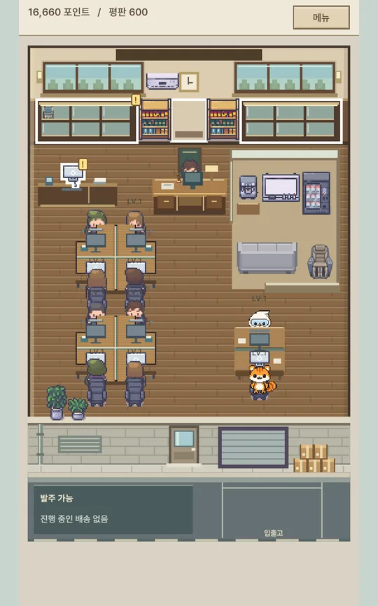
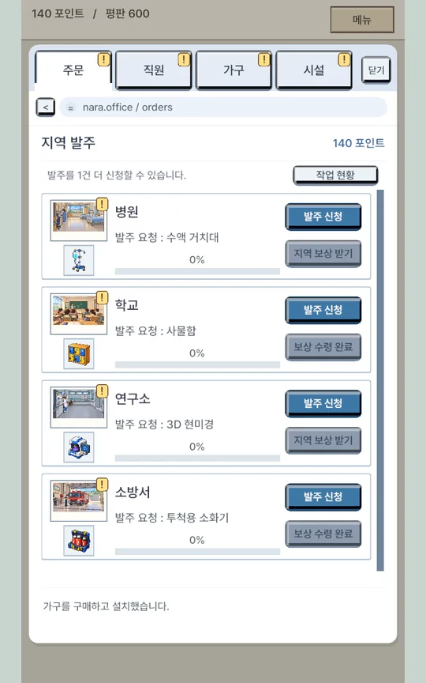
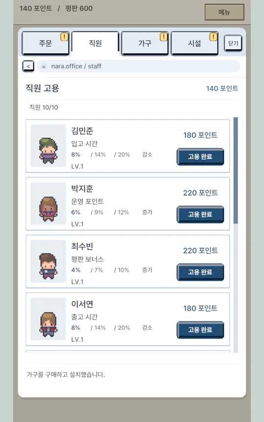
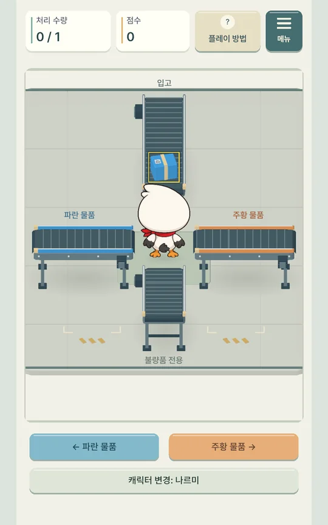
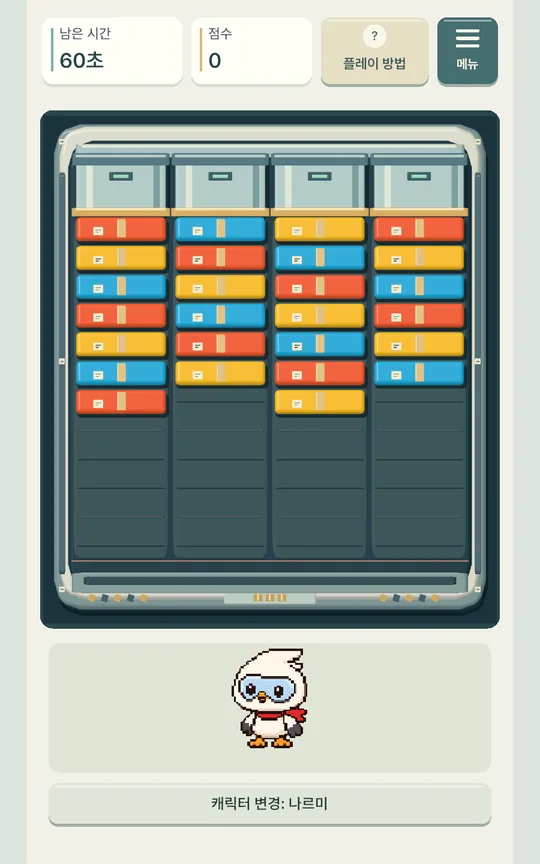
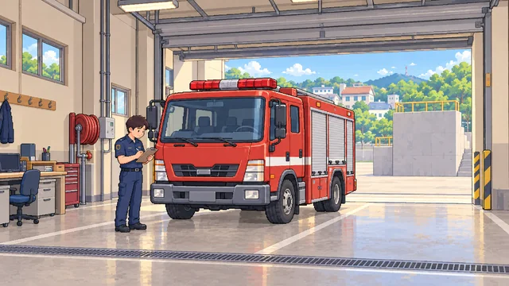
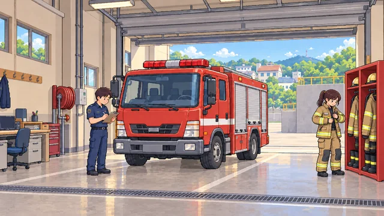
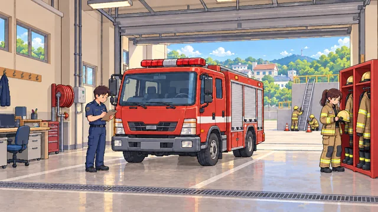
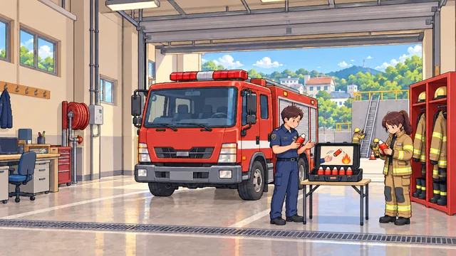

조달청 공모전 제출작
나르미의 나라장터: 공공조달 경영기
공공조달을 "납품하면 지역이 나아진다"는 경험으로 풀어낸 캐주얼 경영 게임입니다. 발주를 받아 분류와 포장 미니게임으로 물품을 처리하고, 납품할수록 병원과 학교, 연구소, 소방서가 발전합니다.
- 장르
- 캐주얼 경영 + 분류 액션 + 포장 퍼즐
- 플랫폼
- Windows, Web (세로 화면)
- 기간
- 2026.10
- 역할
- 1인 제작. 기획, 시스템과 밸런스 설계, 화면과 삽화의 방향 결정
- 도구
- Unity, Codex, ChatGPT









소방서의 발전 삽화. 같은 구도 위에 납품한 물품과 사람들의 활동이 한 단계씩 쌓입니다.
설계 의도 자세히 보기
주제를 게임으로 옮긴 방식
실제 조달 절차는 계약과 심사가 중심이고, 이를 그대로 옮기면 교육용 시뮬레이터가 됩니다. 그래서 절차를 재현하는 대신 조달의 결과, 즉 필요한 물품이 공공시설에 도착해 그곳이 나아지는 모습을 플레이의 보상으로 삼았습니다.
- 발주와 납품
- 발주, 입고, 분류, 포장, 납품이 이어지는 반복 루프
- 정확한 공급과 검수
- 불량품을 걸러내는 분류 미니게임
- 공공기관의 수요 충족
- 병원, 학교, 연구소, 소방서가 납품량에 따라 발전하는 삽화 16장
- 혁신제품
- 지역마다 낮은 확률로 나오는 특수 발주와 전시품 12종 수집
- 계약 심사, 업체 선정
- 넣지 않음
설계와 이유
- 삽화는 기본 시설 위에 물품이 쌓입니다첫 장면부터 병원과 학교로 보여야 하고, 납품의 결과가 숫자가 아니라 장면의 변화로 읽혀야 하기 때문입니다.
- 포장은 4열에서 같은 색을 세로로 3개 잇습니다무작위로 나오는 블록에 결과가 크게 좌우되지 않아야 합니다. 이 게임의 대상은 숙련자가 아니라 가볍게 해보는 사람입니다.
- 미니게임 한 판은 1분 안팎입니다분류 물량은 단계가 올라도 조금씩만 늘고, 포장은 60초로 고정했습니다. 후반으로 갈수록 한 판이 길어져 지루해지는 것을 막습니다.
- 배송 시간이 제약입니다경영 게임에는 플레이어를 제한하는 요소가 필요합니다. 배송 시간을 그 제약으로 두고, 직원과 차량의 성장이 이 시간을 줄이게 했습니다.
- 재화 세 가지의 역할을 나눴습니다지역 진척도는 납품량으로 오르고, 평판은 쓰지 않고 쌓여 지역과 사무실을 열고, 운영 포인트는 구매에 씁니다. 포인트를 써도 진행이 뒤로 가지 않습니다.
- 두 미니게임이 서로를 지우지 않습니다분류에서 성공한 수량이 납품 수량이 되고, 포장은 통과 여부만 정합니다. 한쪽의 실패가 다른 쪽의 성과를 없애지 않게 했습니다.
- 납품 보상은 자동으로, 지역 완료 보상만 직접 받습니다반복되는 조작은 줄이고, 큰 성장 시점만 플레이어가 직접 확인하게 했습니다.
- 기본은 쉽게, 고난도는 선택으로누구나 할 수 있도록 기본 난이도를 가볍게 잡았습니다. 더 어려운 것을 원하는 사람은 속도와 개수가 늘어나는 고난도를 켜고 보상을 더 받습니다.